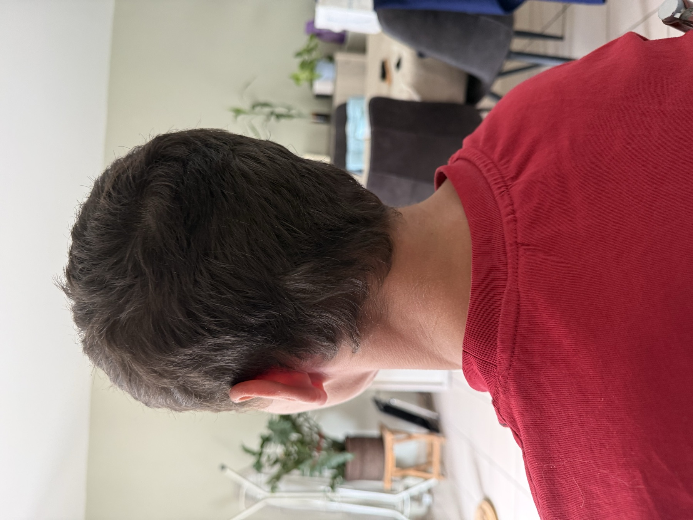
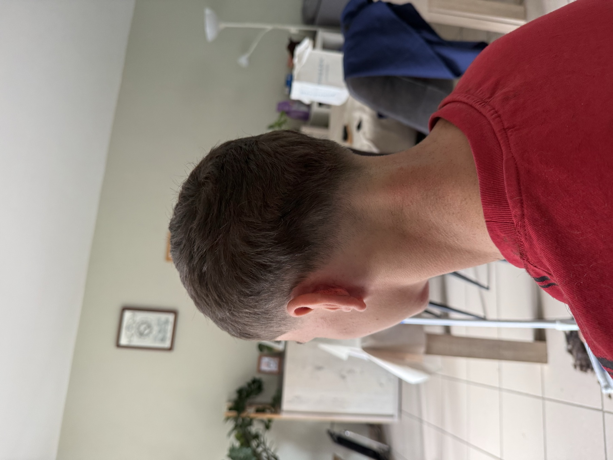
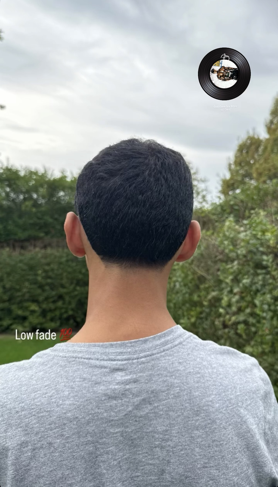
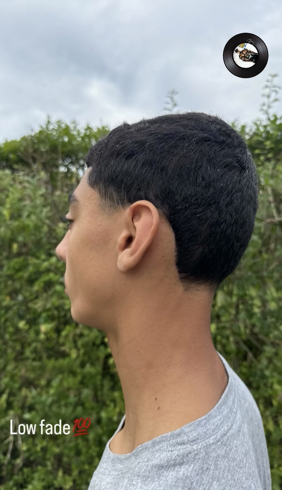

Indeling & ruimte
We onderzoeken hoe een ruimte wordt gebruikt en hoe functies logisch met elkaar kunnen worden verbonden.
Kies de wereld die je wilt ontdekken.
Luxe interieurontwerp en architecturale visualisatie
Volledig interieurontwerp voor woningen, appartementen en villa's.
Luxueuze kantoor-, winkel- en horecaconcepten.
Fotorealistische renders voor projecten en presentaties.
Een geslaagd interieur is meer dan een mooie afbeelding. Indeling, licht, kleur, materiaal en dagelijks gebruik horen samen te werken. Daarom kijken we naar het geheel en naar de details.
We onderzoeken hoe een ruimte wordt gebruikt en hoe functies logisch met elkaar kunnen worden verbonden.
Kleuren, texturen en materialen helpen de gewenste sfeer op te bouwen en geven een ontwerp samenhang.
Licht beïnvloedt hoe een ruimte aanvoelt. We nemen het mee in de sfeer en presentatie van een concept.
Beelden en presentaties maken ideeën begrijpelijk en helpen keuzes voor het ontwerp te bespreken.
Elk project begint met aandachtig luisteren. Daarna groeit het ontwerp stap voor stap, zodat keuzes niet gehaast maar met een duidelijk doel worden gemaakt.
Ons team werkt onder andere met Adobe Photoshop, Adobe Illustrator en Adobe InDesign om ideeën zorgvuldig uit te werken en helder te presenteren. De toolkeuze hangt af van wat het project nodig heeft.
Voor beeldbewerking, sfeerbeelden en het verfijnen van visualisaties.
Voor heldere grafische elementen, illustraties en visuele details.
Voor verzorgde presentaties waarin beelden, tekst en ontwerpkeuzes samenkomen.
Lees hoe een droom rustig uitgroeide tot een creatieve ontwerppraktijk.


Het verhaal van DC Interiors
DC Interiors is begonnen met een droom: ruimtes ontwerpen die niet alleen mooi zijn, maar ook prettig aanvoelen en passen bij de mensen die ze gebruiken. Die droom groeide niet in één dag uit tot een afgerond plan. Er was tijd nodig om te kijken, ideeën te verzamelen en te ontdekken welke stijl echt bij DC Interiors past.
Stap voor stap kon ik rustig ontwerpen. Een indeling, kleur of materiaal kreeg de tijd om goed te voelen voordat het onderdeel werd van een groter geheel. Zo groeide ieder idee verder uit tot een ontwerp met aandacht voor sfeer, functie en persoonlijke smaak.
Voor mij draait interieurontwerp om balans: een ruimte moet er goed uitzien, maar ook logisch werken in het dagelijks leven. Daarom begint elk ontwerp met luisteren en rustig nadenken over wat de ruimte nodig heeft.
DC Interiors blijft bouwen aan die oorspronkelijke droom. Met nieuwsgierigheid, aandacht voor detail en de ruimte om ideeën zorgvuldig te laten groeien.
Bekijk de diensten, werkwijze en projectrenders.
Een frisse, verzorgde look afgestemd op jouw stijl en wensen.
Strakke lijnen en een verzorgde afwerking maken het verschil.
Even tijd voor jezelf, met aandacht voor comfort en vakmanschap.
Iedereen heeft een eigen stijl. Daarom begint een goede knipbeurt met even afstemmen wat je wilt, gevolgd door zorgvuldig werken en een nette afwerking.
We bespreken de gewenste coupe of baardstijl en kijken samen naar de details die voor jou belangrijk zijn.
Vorm en lijnen krijgen aandacht, met als doel een verzorgde look die past bij jouw wensen.
Een laatste controle en verzorgde afwerking maken de afspraak compleet.
Ontdek hoe DC Barbershop is begonnen en hoe het vakmanschap verder groeit.




Kies hoe je contact wilt opnemen om een afspraak te plannen.
Het verhaal van DC Barbershop
DC Barbershop begon eigenlijk als een grap. Een vriend liet me zijn haren knippen. Het was in eerste instantie gewoon een leuke uitdaging, maar tijdens het knippen merkte ik dat ik er plezier in had. Ik zag er potentieel in en begon me af te vragen hoe ver ik ermee kon komen.
In plaats van het bij die ene keer te laten, besloot ik verder te oefenen en beter te worden. Ik bleef aandacht besteden aan mijn techniek, de vorm en de kleine details die een coupe afmaken. Elke nieuwe ervaring gaf me weer iets om van te leren.
Tegenwoordig ben ik goed bezig met DC Barbershop. Wat begon als een grap is uitgegroeid tot iets waar ik serieus aan werk en waar ik trots op ben. Ik wil blijven leren, mijn vaardigheden verder ontwikkelen en iedere klant met aandacht helpen aan een look die bij hem past.
De oorsprong herinnert me eraan dat een onverwacht begin soms een mooie richting kan worden. De volgende stap maak ik met dezelfde nieuwsgierigheid en motivatie als toen.
Bekijk de diensten, sfeer en mogelijkheden om een afspraak te maken.